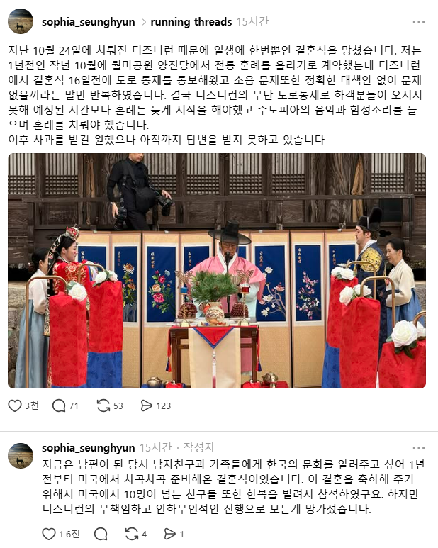
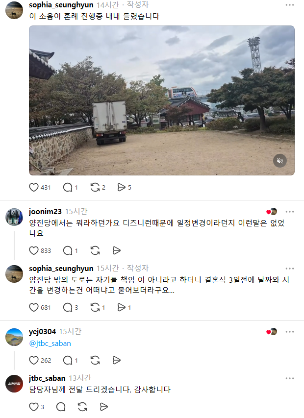

결혼식 보름앞두고 마라톤 한다고 통보받음
경찰에 확인하니 마라톤측에서 허락받은줄 알았다고함
어찌저찌 결혼식 하객들은 통과시켜주겠다 약속받았지만
주변도로는 통제받아서
메이크업받고 예식장으로 1km 이동하는데 1시간 소요
당연히 주변도로 통제로
예상 참석인원 200명중 다시되돌아가는등의 문제로 100명 참석(해외에서 비행기타고 왔다가 참석못한사람도 있다고함)
전통혼례라 주위환경에 영향받을수있는데
혼례하는 내내 음악소리랑 러너들 지나가고 함성소리들림
결혼식장 화장실은 러너들이 줄서서 점령
부부촬영하는데 뒤에 러너들뛰는게찍힘
평생 한번뿐인 결혼식 폭망했는데
책임지는사람이 없음


지들 페이스 조절한답시고
엠블도 못지나가게 난리치는 러너분들이
어찌 마라톤도중 결혼식장 화장실에 가서 이용하는건지 신기함
그것도 무게를 줄이기위한 페이스조절인가;;
정신병자들임 미세먼지 다처먹으면서 뭔지랄인지